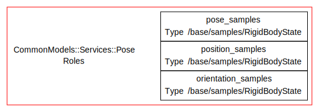
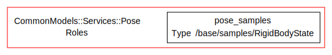

Designing Reusable Networks
- Data Services Definition
- Data Service Providers
- Relationships between Data Services
- Using Data Services as Children in Compositions
- Dependency Injection
- Managing Reusability in Profiles
- Deployments
- A Word of Warning
So far, in this chapter as well as in the Basics, we have designed fairly specific networks - all the components they use are fully specified. The only thing that was not a proper component was the device in the Basics section.
This is very constraining. The networks and profile we built in the Basics chapter could for instance not been adapted to a system where the arm control is not a single device, but a whole sub-network. Generally speaking, it is not enough.
The first tool we will introduce in this section, that allows for more general networks, is the data service. Data services are placeholders for real components, a type system of sorts, that can be replaced in profiles by actual component implementations.
Other mechanisms are then built on top of the data services. Profiles can
inherit from each other, gradually replacing data services or sub-networks by
more specific ones. Compositions can also be subclassed to refine their
children in the same way. The core mechanism that make this possible is
dependency injection, that is the ability to transform a network into another
by replacing sub-parts of the network. This what the use statement we
saw in
passing
Data Services Definition
Defining a data service entails giving it a name, which represents what the data service represents, and providing it with a dataflow interface (input and output ports).
Data services are defined using a data_service_type statement in a class or module
context. The data service name must be in CamelCase, and the new data service
is registered on the enclosing module, e.g.
module CommonModels
module Services
data_service_type 'GlobalPosition' do
output_port 'position_samples', '/base/samples/RigidBodyState'
end
end
end
The types used in the data service must be imported first by adding the
relevant import_types_from statement at toplevel
Naming Convention data services are by convention defined in the AppName::Services
module, and are saved in models/services/name_of_service.rb. For instance,
the Pose data service in the CommonModels bundle is saved in
models/services/global_position.rb and the full service name would be
CommonModels::Services::GlobalPosition.
Generation A template for a new data service, following Syskit's naming conventions and file system structure, can be generated with
syskit gen srv name_of_service
for instance
syskit gen srv global_position
If needed, service models can be defined in namespaces, with e.g.
syskit gen srv control/joints
which defines the service as Services::Control::Joints
Data services do not have tests.
Data Service Providers
Components and compositions provide data services. That is, they offer to the system the port interface, and pledge to offer the service's role in the system through that interface.
For instance, a camera obviously provides an image service. Most cameras, however, would not provide a depth image service. Even if both use the same data type for data representation, the data service system allows to make the difference.
Another example, common_models JointsControlledSystem service. This
represents a set of joints that can be controlled in addition to a feedback
stream. In case the motor driver implementation requires one component per
motor, one would export a whole arm using multiplexer/demultiplexer and a
composition. The composition would then provide the JointsControlledSystem
service.
In its simplest form, the provide statement with the service model and a
service name can be added to the component or composition. The name has to be
unique in the context of the component.
Let's assume a gps::Task component which has the following interface definition:
task_context 'Task' do
output_port 'position_samples', '/base/samples/RigidBodyState'
end
One can declare that this component provides the GlobalPosition data service from common_models with:
Syskit.extend_model OroGen.gps.Task do
provides CommonModels::Services::GlobalPosition,
as: 'position'
end
To be able to call provide like this, each of the data services ports must
have a single port on the component (exported port in the case of
compositions) that matches the port direction and type. In case
there is more than one match, the ports must be matched explicitly by passing a
mapping from the service's position name to the component's. If our gps
component had an interface like:
task_context 'Task' do
# Position in the local frame
output_port 'local_position_samples',
'/base/samples/RigidBodyState'
# Position in the UTM frame
output_port 'utm_position_samples',
'/base/samples/RigidBodyState'
end
Then attempting to provide the service without mapping information would cause the following error:
OroGen.gps.Task does not provide the 'CommonModels::Services::GlobalPosition' service's interface
there are multiple candidates to map position_samples[/base/samples/RigidBodyState]: local_position_samples, utm_position_samples
The mapping must be provided explicitly:
Syskit.extend_model OroGen.gps.Task do
provides CommonModels::Services::Position, as: 'local_position',
'position_samples' => 'local_position_samples'
provides CommonModels::Services::GlobalPosition, as: 'utm_position',
'position_samples' => 'utm_position_samples'
end
Data services and component subclassing The data service system allows to exchange components that are unrelated code-wise but have a relationship from a semantic point of view. This is the preferred way. Subclass two orogen components only if they share a significant amount of code.
Relationships between Data Services
Data types sometimes are semantically complex, that is combine more than one
data into a single sample. The canonical example is a pose, which provides both
a position and an orientation. However, there are other systems that may provide
only an orientation or only a pose. Within Rock, in order to allow a pose
output to be connected to an orientation input, one must use the same data
type. This means that the type (in our pose example,
/base/samples/RigidBodyState) can represent a complex data (the full pose) as
well as its parts (position and orientation).
These relationships can be represented within the data service system. The
relationships between the data services are modelled by declaring that
a service provides another. In this case, no name has to be provided
since there is no ambiguity - a service cannot provide the same other service
multiple times.
Unlike with components, provides in this case does not attempt to map the
provided service ports to the provider's. It will instead, by default, add
the provided service ports to the provider interface. Port mappings are instead
required to avoid the port creation.
For instance, if one would define the GlobalPosition, Position, Orientation and Pose services like this:
data_service_type 'Position' do
output_port 'position_samples', '/base/samples/RigidBodyState'
end
data_service_type 'GlobalPosition' do
provides Position
end
data_service_type 'Orientation' do
output_port 'orientation_samples', '/base/samples/RigidBodyState'
end
data_service_type 'Pose' do
output_port 'pose_samples', '/base/samples/RigidBodyState'
provides Position
provides Orientation
end
The resulting data service would be this:

By explicitly mapping the provided service ports with:
data_service_type 'Pose' do
output_port 'pose_samples', '/base/samples/RigidBodyState'
provides Position, 'position_samples' => 'pose_samples'
provides Orientation, 'orientation_samples' => 'pose_samples'
end
One gets the expected:

Note the Syskit IDE shows the list of provided services, along with the port mappings for them.
Using Data Services as Children in Compositions
Data services can be used as-is in compositions. In fact, the device model we have used in the basics chapter is at its core a data service. The joint control composition from the Basics should be rewritten using a data service. This requires to replace the device model by the data service, but also to change the port names (obviously)
# The _control_loop files define a set of data services related to
# controlling using the /base/samples/Joints data type
require 'common_models/models/services/joints_control_loop'
# Load the oroGen projects
using_task_library 'cart_ctrl_wdls'
using_task_library 'robot_frames'
module SyskitBasics
module Compositions
class ArmCartesianControlWdls < Syskit::Composition
add OroGen.cart_ctrl_wdls.WDLSSolver, as: 'twist2joint_velocity'
add OroGen.cart_ctrl_wdls.CartCtrl, as: 'position2twist'
# This was a device
add CommonModels::Services::JointsControlledSystem, as: 'arm'
add OroGen.robot_frames.SingleChainPublisher, as: 'joint2pose'
position2twist_child.ctrl_out_port.
connect_to twist2joint_velocity_child.desired_twist_port
# Needed to update the ports
twist2joint_velocity_child.solver_output_port.
connect_to arm_child.command_in_port
arm_child.status_out_port.
connect_to twist2joint_velocity_child.joint_status_port
arm_child.status_out_port.
connect_to joint2pose_child.joints_samples_port
joint2pose_child.tip_pose_port.
connect_to position2twist_child.cartesian_status_port
export position2twist_child.command_port
end
end
end
Devices vs. data services ? Generally speaking, one seldom use a device in a composition. Do you really need a Garmin GPS in a particular network ? Can't it work with any other receiver ? Or even a complete network that does pose estimation instead of a GPS ? Using devices in compositions breaks generality with zero advantage, since one still has to do things at the profile level to use the composition.
A data service child within a composition can be refined in subclasses by using
the overload statement. A data service child can be overloaded by either
another data service that provides it, or a component that does. If one still
really wanted to use the device model in a joint control composition, he could with
class GazeboCartesianControlWdls < ArmCartesianControlWdls
overload arm_child, CommonModels::Devices::Gazebo::Model
end
Dependency Injection
Data services are obviously abstract in nature. One cannot run a network that contains a data service, we therefore need a mechanism to transform composition models to replace services by concrete components. While overloading compositions would be a possibility, it would lead to having dense forest of composition models, as one would need to define a single composition model for each assignation of concrete components to the services.
Syskit has another mechanism for this, the use statement we already
discussed. When .use('child_name' => NewModel, …) is called on a composition
model, the result is the composition model with the given child replaced by the
new model. If a child is itself a composition, a grandchild can be selected by
separating the names with dots (e.g. .use('child.grandchild' => NewModel)).
The composition overload we did just above could equivalent have been using a
use statement:
ArmCartesianControlWdls.use('arm' => CommonModels::Devices::Gazebo::Model)
Syskit validates type compatibility, of course, that is the replacement is valid only if it is another service that provides the child's or a component that does. If the types are incompatible, one gets the following message:
invalid selection for arm
got OroGen.cart_ctrl_wdls.CartCtrl
which provides
OroGen.cart_ctrl_wdls.CartCtrl
OroGen.RTT.TaskContext
Syskit::TaskContext
Syskit::Component
Roby::Task
expected something that provides child arm of type CommonModels::Services::JointsControlledSystem
If multiple services match the requested service type, one can select one
explicitly by passing the service instead of the component. A component model
can be accessed with the ${service_name}_srv accessor. In our fake GPS
task, one would access the UTM position service with
OroGen.gps.Task.utm_position_srv and the local position service with
OroGen.gps.Task.local_position_srv.
The result of the use statements can be used anywhere a component or service
can be used, as for instance as a composition child or profile definition. It
can be chained with other model modifiers such as with_arguments or
with_conf. This is how we injected the robot device in out control
compositions:
profile 'ArmControl' do
define 'arm_cartesian_constant_control',
Compositions::ArmCartesianConstantControlWdls.
use(Base.ur10_dev)
define 'arm_joint_position_constant_control',
Compositions::JointPositionConstantControl.
use(Base.ur10_dev)
define 'arm_safe_position',
arm_joint_position_constant_control_def.
with_arguments(setpoint: UR10_SAFE_POSITION)
end
Managing Reusability in Profiles
Profiles are the objects that expose the "final" networks, that is the networks that are going to be used at runtime. As such, they usually are the place where the replacement of services by actual concrete components happen, rather by doing it with subclassing of compositions.
Composition overload vs. injection in profiles As the saying goes, there are only two hard things in computer science: caching invalidation and naming things. Doing the data service replacements using dependency injection avoid polluting the composition namespaces with all the possible combinations of services. Use subclassing when the subclass need changes related to coordination. Stick to profiles in all other cases.
In complex systems, one often ends up with two or three layers of profiles, to share the definitions between the simulated and real systems. The two layer structure is:
- Root layer, defines networks that are still generic, but are already tuned to the needs of your application
- Configuration-specific layer, where the networks are ready to run.
The third layer (actually, layer 0) exists when one creates a domain-specific bundle, that is defines networks that are meant to be used widely by whole communities (i.e. manipulation, …). In this case, Layer 1 would refine these networks and add new ones that are specific to your application.
When used in profiles, one does not see which data services a composition has. In complex systems, relying on the knowledge of which data services need to be replaced is borderline impossible. In order to keep this manageable, profiles define tags. Tags are profile-level services that represent a so-called inflexion point, that is a point that is available for adaptation of the profile. These tags can then be injected in the definitions to "replace" the composition's data services. A tag is defined with
tag 'tag_name', Services::Model
and are then accessed with the ${tag_name}_tag pattern. For instance, the arm
control based on data services we just defined
would be integrated in a Root profile with:
module SyskitBasics
module Profiles
profile 'ArmControl' do
tag 'arm', CommonModels::Services::JointsControlledSystem
define 'arm_cartesian_constant_control',
Compositions::ArmCartesianConstantControlWdls.
use(arm_tag)
define 'arm_joint_position_constant_control',
Compositions::JointPositionConstantControl.
use(arm_tag)
define 'arm_safe_position',
arm_joint_position_constant_control_def
end
end
end
Note that we removed the default joint position in the arm_safe_position
definition, which is obviously UR10-specific
A root profile is then imported within the configuration-specific layer with
the use_profile statement. Tags are replaced by providing the "tag_name"
=> tag_replacement syntax. Our UR10 profile would be defined with:
module SyskitBasics
module Profiles
module Gazebo
profile 'ArmControl' do
use_profile Profiles::ArmControl,
'arm' => Base.ur10_dev
end
end
end
end
If further refinement, such as default arguments, are necessary, they are using
the define syntax, but then use the _def accessor directly:
module SyskitBasics
module Profiles
module Gazebo
profile 'ArmControl' do
use_profile Profiles::ArmControl,
'arm' => Base.ur10_dev
define 'arm_safe_position', arm_safe_position_def.
with_arguments(setpoint: UR10_SAFE_POSITION)
end
end
end
end
Naming scheme and file structure root ("generic") profiles are defined
within the root ${appname}::Profiles namespace, and saved within models/profiles/.
Configuration-specific profiles are saved within
${appname}::Profiles::${ConfigurationName} (e.g. Profiles::Gazebo) and saved within
models/profiles/configuration_name/ (e.g. models/profiles/gazebo). Use the
-r option of syskit gen profile can be used to create the new profile under
the right folder, e.g. syskit gen profile -rgazebo arm_control
Profile properties a profile can be self-contained, ready to instanciate and ready to deploy (and it is broken if it is none of these).
A self contained profiles is a profile where the only abstract parts are
tags defined within itself. The default tests for profiles contain the it {
is_self_contained } lines which verifies this property. Being self-contained
ensures that, when reusing the profile, the only thing the developer needs to
know are this profile's tags, which can be easily read and documented. As the
generated test file says: "You usually want this. Really. Keep it there.". This
is the only test you usually will want in layer 0 and 1 profiles.
A ready-to-instanciate profile is a profile that has no abstract parts.
This is what you want in the layer 2 profiles and is tested with it {
can_instanciate }. It obviously implies that the profile is self-contained.
But as the generated tests say, keep both. This ensures that if you remove
the can_instanciate test, you'll still be testing that the profile is
self-contained.
A ready-to-deployed profile is a profile that has no abstract parts and for
which all components are assigned a proper deployment. This is usually what
you want in the layer 2 profiles and is tested with it { can_deploy }. It
obviously implies that the profile is self-contained and can be instantiated.
But as the generated tests say, keep all three. This ensures that if you remove the
can_deploy test, you'll still be testing for the two other properties.
Deployments
During the basics, we've seen that one must define deployments to be able to run the network. We also discussed have seen in more details how deployments are created within oroGen projects.
Defining deployments within a robot's configuration requires block is often
the only thing you need to do. The only case where you will need more is when
more than one deployment exists of a certain component. In this case, you will
need to create multiple deployments of the same task
model, and Syskit will
require you to specify which deployment the networks should use with the
prefer_deployed_tasks specification. The specification either takes a string
- in which case it must match the deployment name exactly - or a regular
expression. The preferred patterns are inherited in the hierarchy, so the
specification can be given at the composition level to be applied to the
components. With a systematic use of patterns in deployment names, one can use
regular expressions to disambiguate whole networks. Strings are used to match
the names exactly
For instance, the left and right camera deployments of a stereo processing composition could be selected with:
profile 'Perception' do
define 'stereo_depth_processing', Compositions::StereoDepthProcessing.
use('left_camera' => Camera.prefer_deployed_tasks('left_camera'),
'right_camera' => Camera.prefer_deployed_tasks('right_camera'))
end
But if one needs whole processing chains for both cameras, one could decide
that all deployments related to the left camera are prefixed with left_ and
all deployments related to the right camera are prefixed with right_. Regular
expressions will then help:
profile 'Perception' do
define 'left_preprocessed_camera', Compositions::CameraPreprocessing.
prefer_deployed_tasks(/^left_/)
define 'right_preprocessed_camera', Compositions::CameraPreprocessing.
prefer_deployed_tasks(/^right_/)
end
The last example would be to select a deployed tasks pattern on a whole profile. The Profile API does not allow to do this directly, but it can easily be done with:
profile 'LeftArmControl' do
use_profile Profiles::ArmControl,
'arm' => Base.left_arm_dev
each_definition do |definition|
define definition.name, definition.
prefer_deployed_tasks(/^left_/)
end
end
and
profile 'RightArmControl' do
use_profile ArmControl,
'arm' => Base.right_arm_dev
each_definition do |definition|
define definition.name, definition.
prefer_deployed_tasks(/^right_/)
end
end
Note the two profiles share the same definition names, which means that
they cannot be directly used at the same time in the action
interface. It is possible to transform the definition
names within the use_profile statement with the transform_names option:
profile 'RightArmControl' do
use_profile ArmControl,
'arm' => Base.left_arm_dev,
transform_names: ->(base_name) { "left_#{base_name}" }
end
A Word of Warning
The Syskit type system is rich. It has a tendency to play with the software engineer aspiration of making everything general and reusable.
So be careful with this. A Syskit model set that is all-general will be also all-unmanageable. In most cases, make resonably large compositions that contain few data services. Don't reuse compositions just because the other composition existed. Reuse compositions because there is either a semantic link between the two, or because there is a practical reason to. There is no clear rule to follow, so it is something that you have to keep in mind so that you keep it under control.